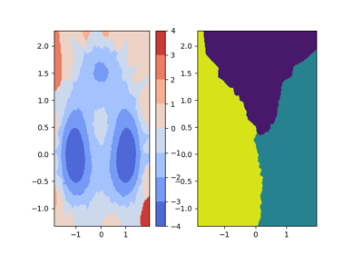
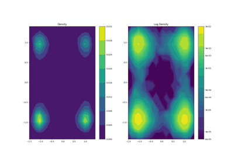
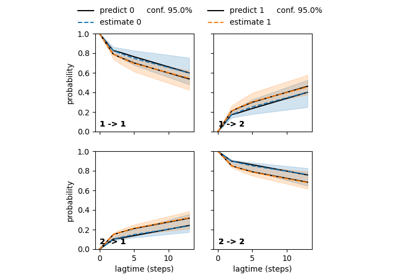
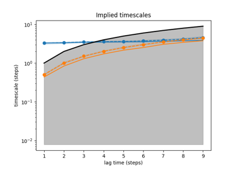
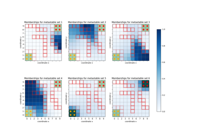
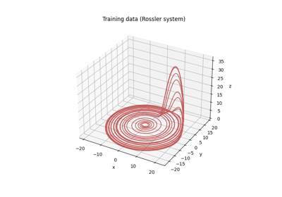
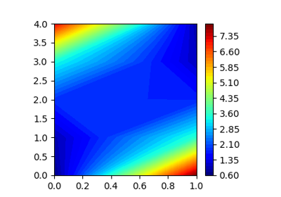
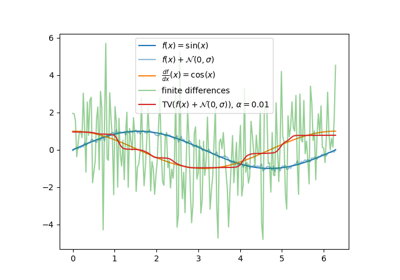

General examples¶
Short examples for some of the methods.

2D contours from xyz

2D densities from xy

Chapman-Kolmogorov test



Implied timescales



PCCA+ on the Drunkard's walk

SINDy: Identification of the Rössler system
SINDy: Identification of the Rössler system

TRAM on a 1D double well

TV Derivative